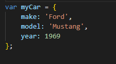
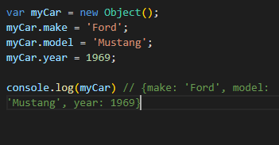
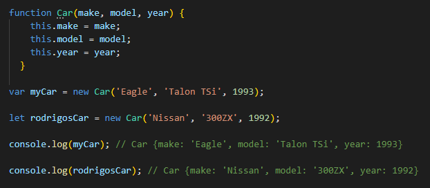

Apuntes Clases JavaScript - NUCBA - pag. 8
Objetos:
Son encapsulados de datos que proporciona un mejor y más rápido y prolijo uso y envío de datos y su lectura.
Son compuestos de propriedades y cada propriedad es compuesta de nombre y valor. Sus valore spueden ser: numeros, strings, valores booleanos, imagenes, funciones, otro objeto. Las propriedades que tienen como valor funciones son llamados de metodos..
Las formas de crear un nuevo objeto son:
- Iniciador de objeto: declara y inicia ya con sus propriedades y valores entre llaves {} y las propriedades son separadas por commas. Ej.:

- Con expresion newObject: se inicia un objeto y después se declara sus propriedades, como vemos abajo:

- Atraves de una funcion constructora, usando el termino 'this', y los argumentos como keys (claves) del objeto. Al llamar la función con los valores, se creará un objeto con claves y valores. Ej.:

Las propriedades no definidas en un objeto tienen valor undefined.
Abajo, un ejemplo de un objeto llamado 'persona', conteniendo propriedades y metodos variados.
El llamado de un valor especifico se hace por intermedio de punto(.) entre el nombre del objecto y su propriedad. Un ejemplo practico:
Para accederse a un dato de un objeto, se puede usar la syntaxis con corchetes []. La notacion de corchetes es la única al cual se puede acceder a nombres de propriedades que contienen espacios o guion o empiece con un numero. Ejemplo:
También el uso de corchetes es útil se necesitás usar dinamicamente los nombres de las propriedades, atraves del uso de variables. Ej.:
A diferencia de los array, que es más amplio, los objetos tienen que tener el nombre de la propriedad/metodo, y tiene que tener un o más valores.
Objetos en javascript tienen inumeros metodos que devuelven un valor, o un array de nombres, un array de valores, el numero de items, etc. Los mas comunes son:
- Object.keys(objetcName) - devuelve un array con los nombres de las propriedades y metodos del objeto.
- Object.values(objectName) - devuelve un array con los valores del objeto.
- Object.create(objectName) - Crea un nuevo objeto con las propriedades y metodos del objeto 'objectName'.